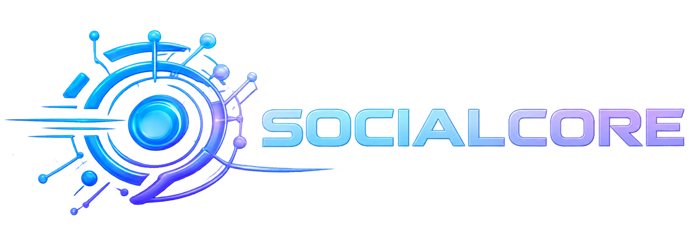

Novo recorde neste nível!
Novo recorde neste nível!Algoritmos
Como plataformas analisam interações para recomendar conteúdos.

Home Algoritmos das Redes Sociais Bem-estar Digital Fake News Repertório culturalAS REDES SOCIAIS E SUAS TÉCNOLOGIAS
Combine os pares e revise, na prática, conceitos sobre redes sociais, algoritmos, bem-estar digital e desinformação.
 8 pares
8 pares 3 níveis
3 níveis Sem tempo limite
Sem tempo limiteMemorize as cartas… o jogo começa em 2s
Como plataformas analisam interações para recomendar conteúdos.
Uso consciente da tecnologia, equilíbrio e qualidade de vida.
Importância de verificar informações antes de compartilhá-las.
Impactos das redes sobre comportamento, cultura e comunicação.